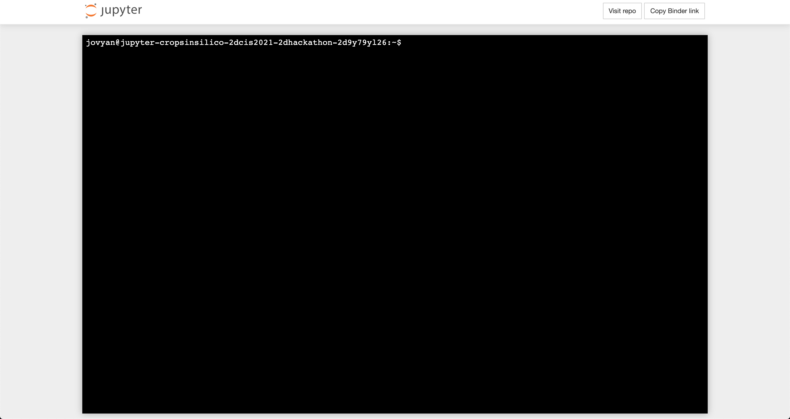

Command Line Interfaces (CLIs)¶
Although the notebooks run integration via the from yggdrasil.runner.run Python method, the typical method for running integrations is via the command line using yggdrasil’s command line interface (CLI) yggrun (or yggdrasil run). You can try out the CLI by opening a terminal from the notebook server (as shown below).
Once the terminal is open, you can execute commands just as you would on a local command line.
To display the options for the CLI, you can run yggrun -h and should see similar output to that shown below.
The same integrations that were run in the notebook can also be run via the command line. For example, you can see the output from running the time step synchronizaiton example with multiple light models via:
yggrun yamls/shoot_v3.yml yamls/roots_v1.yml yamls/light_v1_python.yml yamls/timesync.yml --production-run
The --production-run flag has the same effect as passing production_run=True to the run method in the notebook (disables some validation steps in order to improve performance).